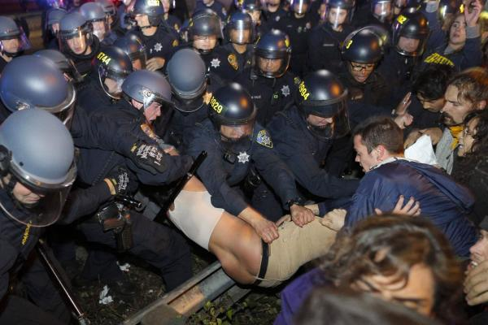
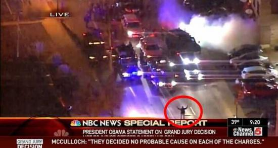
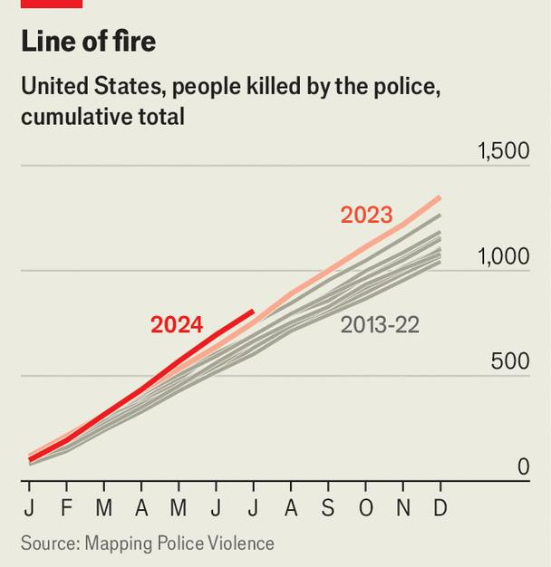

【美國】再談自由殺人的美國警察
2014-11-27 02:17:00
原文网址：https://blog.udn.com/MengyuanWang/108908678
我在前文《自由殺人的美國警察》提到聖路易的郊區一名警察打死一個手無寸鐵的年輕黑人引起了暴動。當時我就預言那位警察不會有什麼法律責任，結果三天前大陪審團正式拒絕綹對此案提起公訴。請注意，這不是審判後宣判無罪，而是連審判都省了。主要的原因當然是警檢單位都偏袒那個警察，對起訴的準備工作敷衍了事；而大陪審團裡十二個人九人是白人，只有三人是黑人。結果是雖然密蘇裡州的大陪審團對99%以上的案件同意提起公訴，這個案件被認定是1%最明顯無辜的，因而不需審判。
這様明顯不公的判決當然引起了美國各地170多個城市甚至英國倫敦民眾的抗議，至少四百多人被逮捕（其實只洛杉磯一地一天就有130多人被捕，被捕總人數應該在萬人以上，但是美國媒體談起自己國內的鎮壓示威就沒那麼大方詳細）。不過體制如此，再怎麼抗議也沒用。大陪審團拒瑤提起公訴，代表著本案的許多細節不會被追究。這様一來，警檢要一手遮天，大家也沒有確切的證據。華盛頓郵報（Washington Post）根據警檢公佈的消息，製作了一系列的圖片（http://www.washingtonpost.com/wp-srv/special/national/ferguson-grand-jury-findings/），有興趣的讀者可以參閲。我覺得最奇怪的是在事件最後，警員Wilson已經追了快50公尺，開了好幾槍了，大陪審團居然相信黑人Brown會轉過身來，空著手向Wilson衝撃。而且多數的目撃者是說Brown只是轉身投降。任何一個理性的人都會對這種不合理又沒有可靠證據的說法存有懷疑，至少會想要經過公訴審判才能確定真相。這様草草下定論，毫無公信力可言。。

加州奧克蘭（Oakland）的警察在逮捕一名女性的示威者，上衣已經被扯掉了。她的同伴（在照片的右後方）穿著柏克萊（Berkeley）的T卹，所以她們大概是柏克萊的大學生。
在大陪審團宣布其決定之後，其公佈的文件裡竟然提到當地警方違規湮滅了證據（詳見華盛頓郵報的這篇文章：http://www.washingtonpost.com/politics/seemingly-unorthodox-police-procedures-emerge-in-grand-jury-documents/2014/11/25/48152574-74e0-11e4-bd1b-03009bd3e984_story.html?hpid=z1）。事發現場完全沒有採證，就叫清理人員處理掉了。 Wilson也沒有被逮捕，而是自由地自行開車回警局。他的手槍是由他自己放到證物室的。後來作口供的時候，居然沒有錄音，所以如果被竄改，也沒辦法追究。像這様疑點重重的案子，冒然劃上了句號，實在是欲蓋彌彰。
剛好在同一個週末，克里夫蘭（Cleveland）的一個12歲的黑人小孩Tamir Rice拿了一把Airsoft玩具槍在公園做白日夢，一個旁觀者打電話叫了警察，不過在電話裡他特別提到那把槍應該是假的。結果警車一到，在第一時間，真的是車子剛停下一秒，Tamir Rice就被打死了。讀者如果不相信，請看華盛頓郵報上的這段錄影：http://www.washingtonpost.com/news/post-nation/wp/2014/11/26/officials-release-video-names-in-fatal-police-shooting-of-12-year-old-cleveland-boy/。所以我曾聽過一個在美國法院工作的人說，只有大仇人才會互相叫警察，此言不虛。
【後注一】我剛剛看到這張照片。口口聲聲罵中共是暴政的台灣人該反省一下，為什麼天安門事件傳遍全球，成為每個人的常識；而沙烏地部隊在Bahrain政府廣場上用自動步槍掃射示威群眾，瑤大多數人卻從沒聽說過。那張一人擋在坦克縱隊前的照片已經被神化了；而下面這個畫面卻只在一家美國電視新聞上快閃而過。我在看電影《駭客任務》（《The Matrix》）的時候，就覺得美國的宣傳戦和「矩陣」（Matrix）一模一樣，把事實完全掩蓋住了。我寫這個博客，也就像Morpheus一様，給讀者紅丸和藍丸的選擇。你會拿哪一顆呢？
【後註二，2024/08/30】這篇正文發表至今已有十年，原本聳人聽聞的“美國警察自由殺人”也早已成爲華語世界的常識。然而在轟轟烈烈的“黑命貴”活動之後，很多人會想當然爾地以爲情況必有改善，實則剛好相反，請參考下圖中不同年度美國警察殺人的纍積數目，很明顯地每年都在穩定增加。這正是昂撒民選體制的妙處：根本不必試圖解決實質問題（尤其需要上層階級付出代價的），只須將問題炒作為短暫的熱門話題，自然能以“自由”、“多元”、“民主”等口號來安撫群衆。這也是爲什麽博客反復强調，昂撒體系和其媒體環境，有意地設計出很强的致蠢效應。
